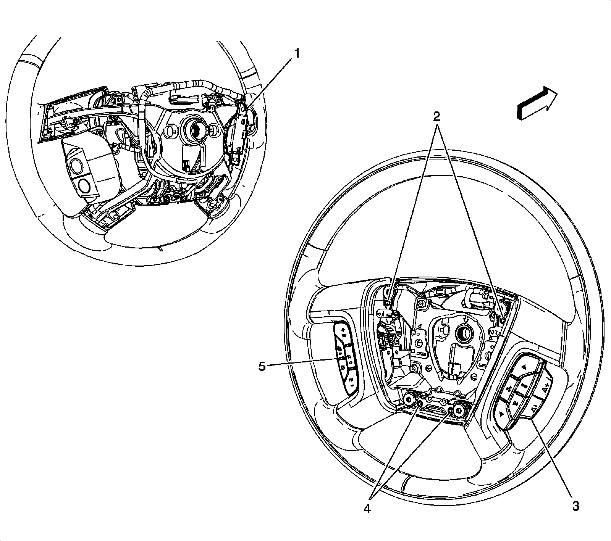

Steering Wheel: Locations
Steering Wheel and Column Component Views
Steering Wheel Components:

1 - Heated Steering Wheel Control Module (KA9)
2 - Horn Switch
3 - Steering Wheel Control Switch Assembly - Right (UK3)
4 - Horn Switch
5 - Steering Wheel Control Switch Assembly - Left (K34/KA9)